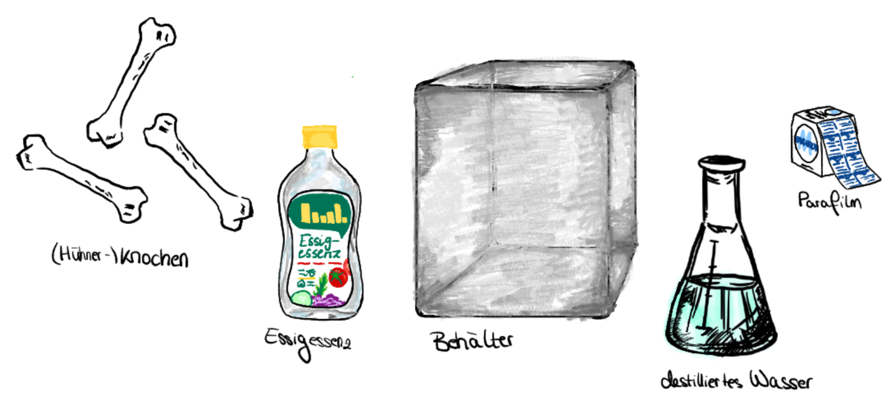
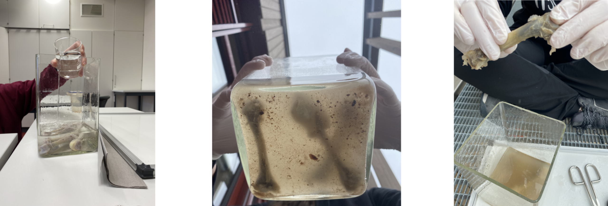
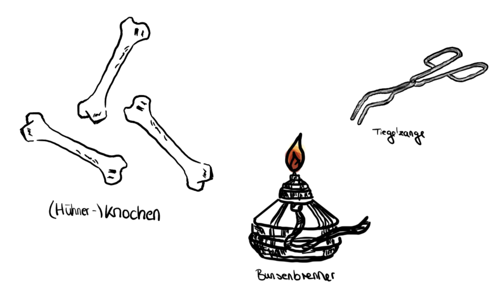
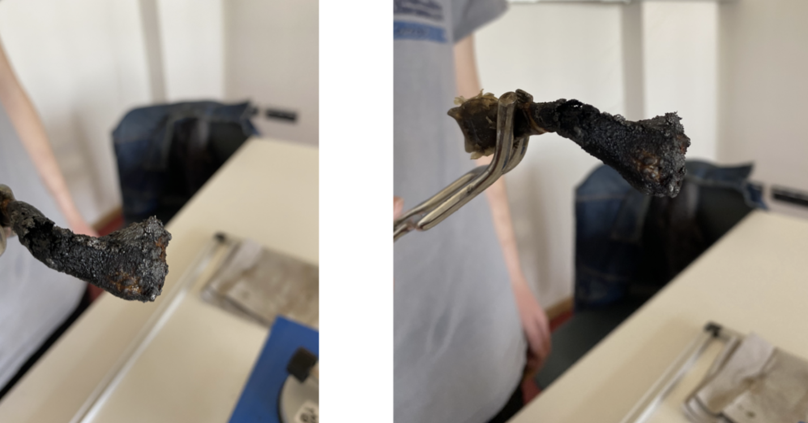

Das Ziel des Knochenversuchs ist es, die in einem Knochen enthaltenen Calcium-Ionen aus diesem zu lösen, um die daraus resultierenden Folgen für sowohl die Struktur als auch die Eigenschaften dieses Knochens analysieren zu können. Hierbei ist die zu beweisende These, dass das Entziehen von Calcium-Ionen aus einem Knochen in den Verlust der Stabilität dessen Struktur resultiert.
Experiment: Knochen auflösen
Zielsetzung
Theoretische Grundlagen
Säure-Base Reaktion:
Säure-Base Reaktionen, sind chemische Reaktionen bei denen Wasserstoff - Kationen (\( \ce{H^+} \))
von den Edukten, also Moleküle oder Molekül-Ionen, abgegeben bzw. angenommen werden.
Bei diesem Austausch heißt das Teilchen, welches das Proton (Bezeichnung für \( \ce{H^+} \) ) abgibt,
Protonendonator bzw. Säure, während das Teilchen, welches dieses annimmt, als
Protonenakzeptor bzw. Base bezeichnet wird. Weil bei diesem Reaktionstyp ein Teilchen ein
Proton „ablöst“, das von einem anderen Teilchen aufgenommen wird, nennt man diese
Reaktion auch Protolyse. Allgemein gilt also:
(\( \ce{HA + B <=> A^- + HB^+} \))
Massenerhaltungsgesetz:
Der Massenerhaltungssatz (auch Massenerhaltungsgesetz) besagt, dass bei einer chemischen
Reaktion die Gesamtmasse der Ausgangsstoffe (Edukte) immer exakt gleich der Gesamtmasse
der Endstoffe (Produkte) ist. Masse kann bei chemischen Prozessen weder neu entstehen noch
vernichtet werden, sondern wird lediglich in ihrer atomaren Struktur umgruppiert => Masse geht
nicht verloren.
Chemische Zusammensetzung von Knochen:
Die Bestandteile eines Knochens können in zwei Gruppen, anorganisch und organisch,
unterteilt werden. Die Zusammensetzung sieht dann wie folgt aus:
-
Anorganische Bestandteile (Mineralien): Der Mineralanteil ist primär für die Härte des Knochens verantwortlich.
- Ca. 85 - 90% Calciumphosphat
- Ca. 10% Calciumcarbonat
- Spurenelemente und Mineralstoffe: Magnesium, Natrium, Kalium, Fluorid und Citrat
-
Organische Bestandteile: Die organische Substanz fungiert als elastisches Gerüst, in das die Mineralien eingelagert sind.
- Kollagen (Typ I): Macht etwa 90% des organischen Materials aus. Es ist ein Strukturprotein, das dem Knochen Biegsamkeit verleiht.
- Nicht-kolagene Proteine (~10%):Hierzu gehören unter anderem Osteocalcin und Osteonectin, die essenziell für die Knochenbildung und -mineralisation sind.
Materialien
- Knochen => in unserem Fall drei Hühnerknochen
- Messer
- Unterlage und Papiertücher
- Großer Behälter (der Rand dessen muss mind. 7 - 8cm über dem Knochen liegen)
- Parafilm
- Wasserfester Stift (Beschriftung)
- Handschuhe
Chemikalien
- Essigessenz
- Destilliertes Wasser
Durchführung
- Fleischreste etc., die auf dem Knochen noch vorhanden sind, mithilfe eines Messers und Papiertüchern vom Knochen entfernen
- Knochen in den großen Behälter legen
- Wasser und Essigessenz so hinzugeben, dass die Lösung sauer genug ist
- Behälter mithilfe von Parafilm gut verschließen, um einen nahezu Luftundurchlässigen Raum zu schaffen
- Behälter beschriften (falls der Versuch in der Schule durchgeführt wird => Chemiefachschaft ist somit informiert und entsorgt nicht versehentlich den Inhalt des Behälters)
- Den Knochen mehrere Wochen in der sauren Lösung lassen. Hierbei ist es selbstverständlich möglich und erwünscht, periodisch die Entwicklung des Knochens zu verfolgen, indem dieser aus dem Behälter genommen und (mit Handschuhen) inspiziert wird

CC BY-SA 4.0" data-source="Eigenes Bild" data-author="Amelia D." data-title="Versuchsaufbau Knochen">Beobachtung
Nach der dritten Woche war bereits zu erkennen, dass die Knochen deutlich leichter und an jeweils beiden Enden flexibel waren. Der mittlere Teil dieser war jedoch weiterhin unbiegsam. Somit haben wir uns entschieden, weitere zwei Wochen abzuwarten. Daraufhin ist es uns gelungen, die kompletten Knochen vollkommen biegsam werden zu lassen. Das Gewicht dieser hat in den fünf vergangenen Wochen stark abgenommen und die Farbe hat sich ebenfalls stark verändert. Vor dem Einlegen war der Knochen rosa und gräulich. Während der fünf Wochen war die folgende Veränderung von einem gelblich- weißen Ton zu einem eher kalten grau Ton mit einigen bläulichen bzw. lila Akzenten zu erkennen. Außerdem war ebenfalls bezüglich der Farbe zu erkennen, dass sich diese Veränderung von außen nach innen abgespielt hat, d. h. der Teil der als erstes seine Stabilität und Härte verloren hat (die beiden Enden) hat auch seine Farbe als erstes verändert. Dadurch war ein Farbverlauf zu erkennen, der darauf hin gedeutet hat, welche Teile des Knochens biegsam und welche weiterhin hart waren.

CC BY-SA 4.0" data-source="Eigenes Bild" data-author="Amelia D." data-title="Beobachtung Knochen">Reaktion
Wie bereits an der Reaktion zu erkennen ist, handelt es sich bei unserem Versuch um eine Säure-Base Reaktion. Das Calciumphosphat wird gespalten, da das Phosphat die Wasserstoff-Atome aufnimmt, die die Essigsäure wiederum abgibt. Somit finden sich die Calciumatome in der Lösung aquatisiert vor, d.h. die Wassermoleküle lagern um ein gelöstes Ion (Calcium-Kationen) an und bilden eine Hülle namens Hydrohülle. So lösen wir also das Calcium und „fangen es in der Lösung ein". Es ist möglich, die Präsenz von Calcium und die Menge dieses Elements nachzuweisen (qualitativer/quantitativer Nachweis von Calcium)
\( \ce{Ca3(PO4)2 + 6 CH3COOH ->} \)
\( \ce{3 Ca^2+ + 6 CH3COO^- + 2 H3PO4} \)
Exkurs: Osteoporose
Als Osteoporose bezeichnet man eine Erkrankung des Skelettsystems, die zu verminderter Knochendichte führt. Die Ursache hierfür ist unter anderem, dass mit dem Alter der Körper Calzium abbaut bzw. ein Calziummangel in diesem herrscht, verursacht durch beispielsweise eine unausgewogene Ernährung. Mit dem Knochenversuch stellen wir diesen Abbau-Prozess künstlich dar, was eine lehrreiche und interessante Darstellung der Auswirkungen dieser Krankheit ist. Selbstverständlich kommt das Ergebnis unseres Experiments, also ein völlig biegsamer und schwacher Knochen, nicht in dieser Form in Osteoporose-Patienten vor, da der Körper niemals eine solch große Menge an Calcium abbauen würde.
Hinweis
Als Ergebnis des Knochen-Experiments werden, wie bereits festgestellt, die Calcium-Ionen aus dem Knochen gelöst. Aus der Auswertung dieses Versuches wird deutlich, dass der Knochen an Masse verliert, da diesem Bestandteile entzogen werden. Dank des Massenerhaltungsgesetzes (siehe theoretische Grundlagen) ist es also möglich, Rückschlüsse über den quantitativen Anteil an Calcium-lonen im Knochen zu ziehen. Hierzu muss lediglich der Knochen vor und nach dem Einlegen in die verdünnte Essigessenz gewogen werden, und die Differenz dieser ermittelt werden. Sogar der Prozentuale Anteil der Calcium-Ionen kann anschließend, durch die Division von der Differenz beider Massen durch die ursprüngliche Masse, ermittelt werden.
Mögliche Ergänzung: Knochen verbrennen
Materialien
- Knochen (sowohl den aus dem vorherigen Experiment, als auch einen, der nicht in Essig gelegt wurde)
- Papiertücher
- Bunsenbrenner
- Tiegelzange

CC BY-SA 4.0" data-source="Eigenes Bild" data-author="Amelia D." data-title="Material Knochen 2">Schutzbrille empfohlen. Lange Haare zusammenbinden.
Durchführung
- Einen der in der Essigessenz (verdünnt) schwimmenden Knochen aus der Lösung entnehmen
- Diesen gut mithilfe von Papiertüchern abtrocknen
- Die Luftzufuhr des Bunsenbrenners ganz öffnen => rauschende Flamme
- Den Knochen mit der Tiegelzange greifen
- Den Knochen in die Flamme halten
- Da wir nun den organischen Bestandteil des Knochens „zerstören" wollen ist es sinnvoll, den Knochen länger in die Flamme zu halten um möglichst viel Kollagen und weitere Proteine aus dem Kochen zu entfernen
- Knochen beobachten und abkühlen lassen
- Sobald genügend abgekühlt: Knochen in die Hand nehmen (Handschuhe) und zerbröseln
Beobachtung
Der verbrannte Knochen ist nun noch leichter geworden und sieht kleiner bzw. verformt aus. Wenn er in die Hand genommen wird und auch nur ein leichter Druck auf ihn ausgeübt wird, wird er brüchig und bröselt auseinander. Er ist also porös geworden und kann kaum auf ihn ausgeübten Druck überstehen.

CC BY-SA 4.0" data-source="Eigenes Bild" data-author="Amelia D." data-title="Beobachtung Knochen 2">Auswertung
Aus der Beobachtung kann der Schluss gezogen werden, dass durch die Verbrennung des organischen Bestandteils des Knochens, diesem weiter Härte aber vor allem Flexibilität/Elastizität entzogen wird. Er lässt sich nun nicht mehr biegen und stattdessen bricht er, wodurch ihm die Eigenschaft der Porosität zugeschrieben werden kann. Letztlich haben wir auch die Bedeutung des organischen Bestandteils des Skelettsystems dargestellt und bewiesen.